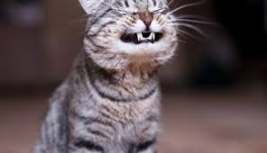

"gatitos"
Los gatos son una de las mascotas que más aceptación tienen entre las personas, junto con los perros. Estos felinos tienen una forma de ser muy diferente de la de estos caninos, algo que les hace ser muy especiales, tanto por su actitud
Comportamiento del gato feliz:
Cuando un gato es feliz nos lo cuenta directamente.
Tu gato tiene su propia forma de contártelo.
Estos son algunos de los comportamientos que reconocerás:
"Bienvenida feliz"
- Cuando un gato se alegra de verte, levantará su cola.
- La máxima felicidad es cuando levanta la cola bien derecha con la punta arqueada o agitándose.
- Las orejas estarán levantadas y los párpados ligeramente entornados.
"Feliz y curioso"
- La curiosidad y el entusiasmo son signos de felicidad. Un gato curioso levantará la cola y puede que la mueva de lado a lado, con las orejas levantadas y los ojos bien abiertos.
- Las orejas levantadas y orientadas ligeramente hacia adelante, con los bigotes relajados, son gestos de un gato feliz y atento.
- Si le acaricias ahora, los bigotes pueden adelantarse un poco y sus ojos se entrecierran mientras que ronronea suavemente...es un gato muy feliz.

"Feliz y "hablador"
- Los gatitos te lo cuentan todo y se dedican a entablar interminables conversaciones.
- Generalmente los tonos agudos indican felicidad mientras que los graves pueden transmitir más frustración y apremio.
